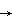
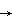
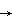

A path in a space X is a continuous map
 : [0, 1] X where the interval [0, 1] has its usual topology.
: [0, 1] X where the interval [0, 1] has its usual topology.
| Previous page (Connectedness) | Contents | Next page (Compactness) |
For some purposes a more geometric vrsion of connectednes is useful.
Definition
A path in a space X is a continuous map : [0, 1] X where the interval [0, 1] has its usual topology.
Remark
Note that the path is not just the subset im()  X but is this set together with a parametrisation. However, we will often refer to the subset as a path from (0) to (1).
X but is this set together with a parametrisation. However, we will often refer to the subset as a path from (0) to (1).
Definition
A space X is called pathwise connected if every pair of points in X can be joined by a path in X.
The important result is:
Theorem
Every pathwise connected space is connected.
Proof
Since [0, 1] is connected every continuous image of it is also. So join one point p of X to each other by some path Px and we have X =  Px with p
Px with p 
 Px and the result follows from the theorem of the last section.
Px and the result follows from the theorem of the last section.

Of less importance, but still of some interest is the fact that the converse is false.
Example
 The following space is connected but not pathwise connected.
The following space is connected but not pathwise connected.
Define the function f : R R by f(x) = sin(1/x) if x  0, and f(0) = 0.
0, and f(0) = 0.
Let X be the graph of f with its topology as a subspace of R2.
No continuous path can "get from the LH side to the RH side. However, any open neighbourhood of (0, 0) meets both sides and the space is connected.
Pathwise connectedness gives an easy way of verifying that many of our standard examples are connected.
Examples
A disc in R2 is connected
Proof
It is easy to find a (stright-line!) path between any two points.
A torus is connected, a Möbius band is connected, ...
| Previous page (Connectedness) | Contents | Next page (Compactness) |